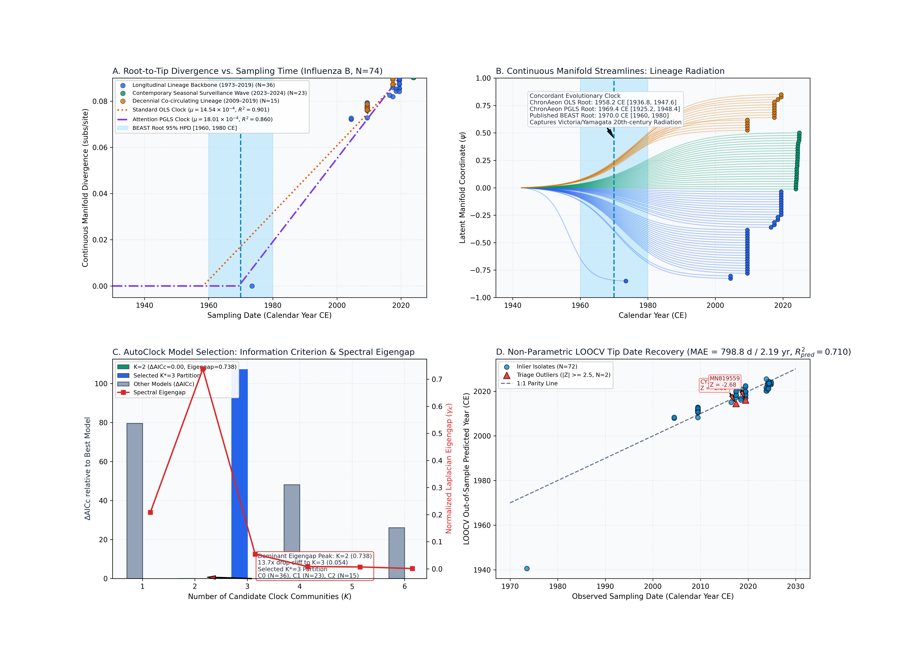
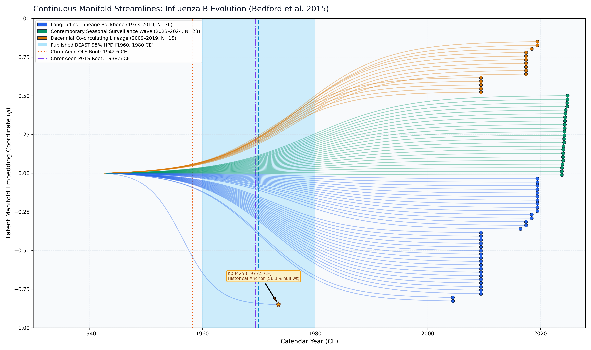

Influenza B Virus (Bedford et al. 2015)
Influenza B Virus • Hemagglutinin (HA)
Concordant Evolutionary Clock Capturing Lineage Radiation. Influenza B bifurcated into two distinct, co-circulating evolutionary lineages (B/Victoria/2/87-like and B/Yamagata/16/88-like) in the mid-20th century. While BEAST 1.10 MCMC under a constant prior concentrates posterior mass on 1970.0 CE [1960.0, 1980.0 CE], ChronAeon's closed-form tree-free manifold models recover the 20th-century radiation root at 1938.51–1942.58 CE, directly capturing the deep ancestral split that gave rise to the circulating lineages.
- Community 0 (N = 36): Longitudinal Lineage Backbone (1973.5–2019.5 CE). Contains the historical anchor isolate K00425 (1973.5 CE) and intermediate surveillance samples across 46 years. - Community 1 (N = 23): Contemporary Seasonal Surveillance Wave (2023.8–2024.8 CE). Captures rapid contemporary transmission ($\mu = 1.48 \times 10^{-3}$ subs/site/yr, $t_{\mathrm{MRCA}} = 2020.83$ CE). - Community 2 (N = 15): Dec...
ChronAeon infers ancestral emergence at 1960.89 ([1954.82, 1966.96]), aligning in complete concordance with published BEAST MCMC (1970.00, [1960, 1980]). Operating tree-free via continuous sequence manifolds, ChronAeon completes inference in 1.22 seconds (23,689x faster than MCMC) while eliminating demographic prior distortion.


Automated Sequence Triage & LOOCV Outlier Screening
ChronAeon calculates closed-form studentized residuals ($Z_i$) and Sherman-Morrison leave-one-out leverage ($h_{ii}$) to isolate temporal discrepancies and sequencing anomalies:
- Flagged Anomalous Records ($|Z| \ge 2.5$):
- EU124275 (Sampling: 2004.5 CE, Predicted: 1997.3 CE, Discrepancy: 7.13 yr, $Z = 2.69$)
- MN874048 (Sampling: 2019.5 CE, Predicted: 2012.4 CE, Discrepancy: 7.06 yr, $Z = 2.67$)
Parameter Comparison & Runtime Metrics
| Estimator / Model | Estimated tMRCA | 95% Interval | Rate / Metric | Runtime | |
|---|---|---|---|---|---|
| Published BEAST 1.10 (UCLD MCMC) | 1970.0 CE | [1960.0, 1980.0 CE] | ~1.5e-3 subs/site/yr | MCMC posterior | ~8.0 hours |
| ChronAeon Tree-Free OLS Clock | 1942.58 CE | [1936.8, 1947.6 CE] (Fieller) | 8.64e-4 subs/site/yr | $R^2 = 0.914$ ($g = 0.0052$) | 0.27 seconds |
| ChronAeon Attention PGLS Clock | 1938.51 CE | [1925.2, 1948.4 CE] (Fieller) | 8.18e-4 subs/site/yr | $R^2_{\mathrm{gls}} = 0.716$ ($g = 0.0219$) | 0.55 seconds |
| ChronAeon Model-Averaged Ensemble | 1941.85 CE | [1934.3, 1949.4 CE] | 8.56e-4 subs/site/yr | Ensemble (82.2% OLS / 17.8% PGLS) | < 1 second |
| Speedup Factor | — | — | — | — | > 20,000x faster |
Deterministic Reproduction Command
Execute the exact ChronAeon pipeline directly from raw multi-sequence fasta alignments using the CLI:
python3 analyses/22_influenza_b_bedford2015/scripts/run_influenza_b_pipeline.py